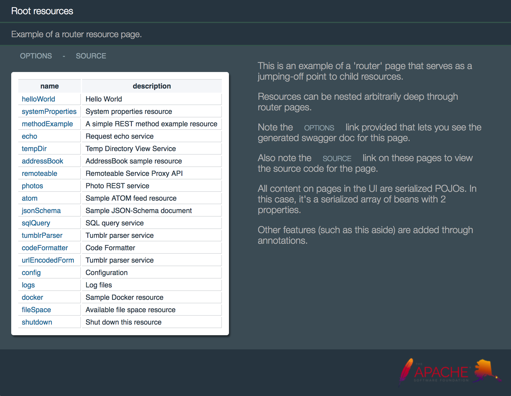

<!--
/***************************************************************************************************************************
 * Licensed to the Apache Software Foundation (ASF) under one or more contributor license agreements.  See the NOTICE file
 * distributed with this work for additional information regarding copyright ownership.  The ASF licenses this file
 * to you under the Apache License, Version 2.0 (the "License"); you may not use this file except in compliance
 * with the License.  You may obtain a copy of the License at
 *  
 *  http://www.apache.org/licenses/LICENSE-2.0
 *  
 * Unless required by applicable law or agreed to in writing, software distributed under the License is distributed on an
 * "AS IS" BASIS, WITHOUT WARRANTIES OR CONDITIONS OF ANY KIND, either express or implied.  See the License for the
 * specific language governing permissions and limitations under the License.
 ***************************************************************************************************************************/
 -->

6.3.0 (Jun 30, 2017)

<div class='topic'>
	<p>
		Juneau 6.3.0 is a major update with significant new functionality for defining proxy interfaces against
		arbitrary 3rd-party REST interfaces.
	</p>
	
	<h5 class='topic w800'>org.apache.juneau</h5>
	<ul class='spaced-list'>
		<li>
			New package:  {@link oaj.http}.
		<li>
			Support for dynamic beans.  See <del>@BeanProperty(name)</del>.
		<li>
			New doc: <dc>2.8 - Virtual Beans</dc>
		<li>
			New doc: <dc>2.13 - Comparison with Jackson</dc>
		<li>
			All parsers now allow for numeric types with <js>'K'</js>/<js>'M'</js>/<js>'G'</js> suffixes to represent
			kilobytes, megabytes, and gigabytes.
			<p class='bcode'>
		<jc>// Example</jc>
		<jk>int</jk> i = JsonParser.<jsf>DEFAULT</jsf>.parse(<js>"123M"</js>);  <jc>// 123MB</jc>
			</p>
		<li>New/modified methods on <del>ConfigFile</del>:
			<ul>
				<li><del>ConfigFile.put(String,String,String,boolean)</del>
				<li><del>ConfigFile.put(String,String,Object,Serializer,boolean,boolean)</del>
				<li><del> ConfigFile.getObject(String,Type,Type...)</del>
				<li><del> ConfigFile.getObject(String,Parser,Type,Type...)</del>
				<li><del>ConfigFile.getObject(String,Class)</del>
				<li><del>ConfigFile.getObject(String,Parser,Class)</del>
				<li><del> ConfigFile.getObject(String,String,Type,Type...)</del>
				<li><del> ConfigFile.getObject(String,String,Parser,Type,Type...)</del>
				<li><del>ConfigFile.getObject(String,String,Class)</del>
				<li><del>ConfigFile.getObject(String,String,Parser,Class)</del>
				<li><del> ConfigFile.getObjectWithDefault(String,Object,Type,Type...)</del>
				<li><del> ConfigFile.getObjectWithDefault(String,Parser,Object,Type,Type...)</del>
				<li><del>ConfigFile.getObjectWithDefault(String,Object,Class)</del>
				<li><del>ConfigFile.getObjectWithDefault(String,Parser,Object,Class)</del>
			</ul>
		<li>New ability to interact with config file sections with proxy interfaces with new method <del>ConfigFile.getSectionAsInterface(String,Class)</del>.
		<li><del>@BeanProperty</del>annotation can now be applied to getters
			and setters defined on interfaces.
		<li>New methods on {@link oaj.serializer.SerializerSession} and {@link oaj.parser.ParserSession}
			for retrieving context and runtime-override properties:
			<ul>
				<li><del>Session.getProperty(String)</del>
				<li><del>Session.getProperty(String,String)</del>
				<li><del>Session.getProperty(Class,String)</del>
				<li><del>Session.getProperty(Class,String,Object)</del>
			</ul>	
		<li>New <del>PartSerializer</del>interface particularly tailored to HTTP
			headers, query parameters, form-data parameters, and path variables.  
			<br>Allows easy user-defined serialization of these objects.
			<br>The interface can be used in the following locations:
			<ul>
				<li><del>Builder.partSerializer(Class)</del>
				<li><del>Path.serializer</del>
				<li><del>Query.serializer</del>
				<li><del>QueryIfNE.serializer</del>
				<li><del>FormData.serializer</del>
				<li><del>FormDataIfNE.serializer</del>
				<li><del>Header.serializer</del>
				<li><del>HeaderIfNE.serializer</del>
			</ul>
		<li>Across-the-board improvements to the URI-resolution support (i.e. how URIs get serialized).
			<ul>
				<li>New support for resolving URIs with the following newly-recognized protocols:
					<ul>
						<li><js>"context:/..."</js> - Relative to context-root of the application.
						<li><js>"servlet:/..."</js> - Relative to the servlet URI.
						<li><js>"request:/..."</js> - Relative to the request URI.
					</ul>
					For example, currently we define HTML page links using variables and servlet-relative URIs...
					<p class='bcode'>
		pages=<js>"{up:'$R{requestParentURI}', options:'?method=OPTIONS', upload:'upload'}"</js>
					</p>
					With these new protocols, we can define them like so:
					<p class='bcode'>
		links=<js>"{top:'context:/', up:'request:/..' ,options:'servlet:/?method=OPTIONS', upload:'servlet:/upload'}"</js>
					</p>
					The old method of using variables and servlet-relative URIs will still be supported but using 
					these new protocols should (hopefully) be easier to understand.
					<br>
					These protocols work on all serialized URL and URI objects, as well as classes and properties 
					annotated with <del>URI @URI</del>.
				<li>New classes:
					<ul>
						<li>{@link oaj.UriContext}
						<li>{@link oaj.UriRelativity}
						<li>{@link oaj.UriResolution}
						<li>{@link oaj.UriResolver}
					</ul>
				<li>New configuration properties:
					<li><del>SerializerContext.SERIALIZER_uriContext</del>
					<li><del>SerializerContext.SERIALIZER_uriRelativity</del>
					<li><del>SerializerContext.SERIALIZER_uriResolution</del>
					<li><del>SerializerContext.SERIALIZER_maxIndent</del>
			</ul>
		<li>New annotation property: <del>@BeanProperty(value)</del>.
			<br>The following two annotations are considered equivalent:
			<p class='bcode'>
		<ja>@BeanProperty</ja>(name=<js>"foo"</js>)
		
		<ja>@BeanProperty</ja>(<js>"foo"</js>)
			</p>
		<li>Fixed a race condition in ClassMeta.
		<li><jsf>URLENC_paramFormat</jsf> has been moved to <del>UonSerializer.UON_paramFormat</del>, 
			and the UON/URL-Encoding serializers will now always serialize all values as plain text.
			<br>This means that arrays and maps are converted to simple comma-delimited lists.
		<li>Listener APIs added to serializers and parsers:
			<ul>
				<li>{@link oaj.serializer.SerializerListener}
				<li>{@link oaj.serializer.Serializer.Builder#listener(Class)}
				<li><del>@RestResource(serializerListener)</del>
				<li><del>RestConfig.serializerListener(Class)</del>
				<li>{@link oaj.parser.ParserListener}
				<li>{@link oaj.parser.Parser.Builder#listener(Class)}
				<li><del>@RestResource(parserListener)</del>
				<li><del>RestConfig.parserListener(Class)</del>
				<li><del>Builder.listeners(Class,Class)</del>
			</ul>juneau-examples-core.import1.pngjuneau-examples-core.import1.png
		<li>The <del>BEAN_debug</del>flag will now capture parser input and make it
			available through the <del>ParserSession.getInputAsString()</del>method so that it can be used
			in the listeners.
		<li>Significant new functionality introduced to the HTML serializer.  
			<br>Lots of new options for customizing the HTML output.
			<ul>
				<li>New {@link oaj.html.annotation.Html#render() @Html(render)} annotation and {@link oaj.html.HtmlRender} class that allows you
					to customize the HTML output and CSS style on bean properties:
					<br>
					<br>Annotation can be applied to POJO classes and bean properties.
				<li>Several new properties for customizing parts of the HTML page:
					<ul>
						<li><del>HtmlDocSerializerContext.HTMLDOC_title</del>
						<li><del>HtmlDocSerializerContext.HTMLDOC_description</del>
						<li><del>HtmlDocSerializerContext.HTMLDOC_branding</del>
						<li><del>HtmlDocSerializerContext.HTMLDOC_header</del>
						<li><del>HtmlDocSerializerContext.HTMLDOC_nav</del>
						<li><del>HtmlDocSerializerContext.HTMLDOC_aside</del>
						<li><del>HtmlDocSerializerContext.HTMLDOC_footer</del>
						<li><del>HtmlDocSerializerContext.HTMLDOC_noResultsMessage</del>
						<li><del>HtmlDocSerializerContext.HTMLDOC_cssUrl</del>
						<li><del>HtmlDocSerializerContext.HTMLDOC_css</del>
						<li><del>HtmlDocSerializerContext.HTMLDOC_template</del>
					</ul>
				<li>New interface {@link oaj.html.HtmlDocTemplate} that allows full control over rendering
					of HTML produced by {@link oaj.html.HtmlDocSerializer}.
				
			</ul>
		<li>{@link oaj.annotation.NameProperty @NameProperty} and {@link oaj.annotation.ParentProperty @ParentProperty}
			can now be applied to fields.  
		<li>New properties on {@link oaj.BeanContext}:
			<ul>
				<li><del>BEAN_includeProperties</del>
				<li><del>BEAN_excludeProperties</del>
			</ul>
		<li>New annotation property: <del>@BeanProperty(format)</del>.
	</ul>
	
	<h5 class='topic w800'>org.apache.juneau.rest</h5>
	<ul class='spaced-list'>
		<li>
			MAJOR enhancements made to the REST API.
		<li>
			The {@link oajr.RestRequest} class functionality has been broken up into the following
			functional pieces to reduce its complexity:
			<ul>
				<li><del>RestRequest.getBody()</del>- The request body.
				<li>{@link oajr.RestRequest#getHeaders()} - The request headers.
				<li><del>RestRequest.getQuery()</del>- The request query parameters.
				<li><del>RestRequest.getFormData()</del>- The request form data parameters.
				<li><del>RestRequest.getPathMatch()</del> - The path variables and remainder.
			</ul>	
			The following classes have been introduced:
			<ul>
				<li><del>RequestBody</del>
				<li><del>RequestHeaders</del>
				<li><del>RequestQuery</del>
				<li><del>RequestFormData</del>
				<li><del>RequestPath</del>
			</ul>						
		<li>
			The un-annotated parameter types that can be passed in through REST Java methods has been significantly expanded.
			<br>For reference, the previous supported types were:
			<ul>
				<li>{@link oajr.RestRequest} - The request object.
				<li>{@link javax.servlet.http.HttpServletRequest} - The superclass of <c>RestRequest</c>.
				<li>{@link oajr.RestResponse} - The response object.
				<li>{@link javax.servlet.http.HttpServletResponse} - The superclass of <c>RestResponse</c>.
			</ul>
			The new supported types are:
			<ul>
				<li><del>Accept</del>
				<li><del>AcceptCharset</del>
				<li><del>AcceptEncoding</del>
				<li><del>AcceptLanguage</del>
				<li><del>Authorization</del>
				<li><del>CacheControl</del>
				<li><del>Connection</del>
				<li><del>ContentLength</del>
				<li><del>ContentType</del>
				<li><del>Date</del>
				<li><del>Expect</del>
				<li><del>From</del>
				<li><del>Host</del>
				<li><del>IfMatch</del>
				<li><del>IfModifiedSince</del>
				<li><del>IfNoneMatch</del>
				<li><del>IfRange</del>
				<li><del>IfUnmodifiedSince</del>
				<li><del>MaxForwards</del>
				<li><del>Pragma</del>
				<li><del>ProxyAuthorization</del>
				<li><del>Range</del>
				<li><del>Referer</del>
				<li><del>TE</del>
				<li><del>UserAgent</del>
				<li><del>Upgrade</del>
				<li><del>Via</del>
				<li><del>Warning</del>
				<li>{@link java.util.TimeZone}
				<li>{@link java.io.InputStream}
				<li>{@link javax.servlet.ServletInputStream}
				<li>{@link java.io.Reader}
				<li>{@link java.io.OutputStream}
				<li>{@link javax.servlet.ServletOutputStream}
				<li>{@link java.io.Writer}
				<li>{@link java.util.ResourceBundle} - Client-localized resource bundle.
				<li><del>MessageBundle</del> - A resource bundle with additional features.
				<li>{@link java.util.Locale} - Client locale.
				<li><del>RequestHeaders</del> - API for accessing request headers.
				<li><del>RequestQuery</del> - API for accessing request query parameters.
				<li><del>RequestFormData</del> - API for accessing request form data.
				<li><del>RequestPath</del> - API for accessing path variables.
				<li><del>RequestBody</del> - API for accessing request body.
				<li>{@link oaj.http.HttpMethod} - The method name matched (when using <c><ja>@RestMethod</ja>(name=<js>"*"</js>)</c>)
				<li>{@link java.util.logging.Logger} - The logger to use for logging.
				<li><del>JuneauLogger</del> - Logger with additional features.
				<li>{@link oajr.RestContext} - The resource read-only context.
				<li>{@link oaj.parser.Parser} - The parser matching the request content type.
				<li>{@link oaj.dto.swagger.Swagger} - The auto-generated Swagger doc.
				<li><del>ConfigFile</del>- The external config file for the resource.
			</ul>
			So, for example...
			<p class='bcode'>
		<jd>/** Old way */</jd> 
		<ja>@RestMethod</ja>(name=<js>"*"</js>, path=<js>"/example1/{a1}/{a2}/{a3}/*"</js>) 
		<jk>public</jk> String example1( 
			<ja>@Method</ja> String method, 
			<ja>@Path</ja>(<js>"a1"</js>) String a1, 
			<ja>@Path</ja>(<js>"a2"</js>) <jk>int</jk> a2, 
			<ja>@Path</ja>(<js>"a3"</js>) UUID a3, 
			<ja>@Query</ja>(<js>"p1"</js>) <jk>int</jk> p1, 
			<ja>@Query</ja>(<js>"p2"</js>) String p2, 
			<ja>@Query</ja>(<js>"p3"</js>) UUID p3, 
			<ja>@Header</ja>(<js>"Accept-Language"</js>) String lang, 
			<ja>@Header</ja>(<js>"Accept"</js>) String accept 
		) 
	
		<jd>/** New way */</jd> 
		<ja>@RestMethod</ja>(name=<js>"*"</js>, path=<js>"/example2/{a1}/{a2}/{a3}/*"</js>) 
		<jk>public</jk> String example2(
			HttpMethod httpMethod,
			RequestPathParams pathParams,
			RequestQuery query,
			AcceptLanguage acceptLanguage,
			Accept accept
		)
			</p>
		<li>
			A new annotation <del>@RestResource(paramResolvers)</del>}
			that allows you to define your own custom Java method parameter resolvers.
		<li>
			Fixed bug where Writer returned by {@link oajr.RestResponse#getWriter()} was not being flushed automatically
			at the end of the HTTP call.
		<li>
			New annotations added to <del>RestMethod @RestMethod</del>:
			<ul>
				<li><del>RestMethod.defaultQuery() defaultQuery()</del>
				<li><del>RestMethod.defaultFormData() defaultFormData()</del>
				<li><del>bpIncludes()</del>
				<li><del>bpExcludes()</del>
			</ul>
		<li>
			Default values on header, query, and form-data annotations:
			<ul>
				<li><del>@Header(def)</del> - Default header value.
				<li><del>@Query(def)</del> - Default query parameter value.
				<li><del>@FormData(def)</del>- Default form data parameter value.
			</ul>
		<li>
			New attributes on <del>@RestResource</del>:
			<ul>
				<li><del>serializerListener()</del>
				<li><del>parserListener()</del>
				<li><del>widgets()</del>
				<li><del>swagger()</del>
				<li><del>htmldoc()</del>
			</ul>
		<li>
			New attributes on <del>RestMethod @RestMethod</del>:
			<ul>
				<li><del>widgets()</del>
				<li><del>RestMethod.swagger() swagger()</del>
				<li><del>RestMethod.htmldoc() htmldoc()</del>
			</ul>
		<li>
			New string vars:
			<ul>
				<li>{@link oajr.vars.UrlVar} - Resolve <js>"$U{...}"</js> variables to URLs.
				<li><del>WidgetVar</del>- Resolve <js>"$W{...}"</js> variables to widget contents.
			</ul>
		<li>
			New methods on <del>RestConfig</del>:
			<ul>
				<li><del>setHtmlTitle(String)</del>
				<li><del>setHtmlDescription(String)</del>
				<li><del>setHtmlBranding(String)</del>
				<li><del>setHtmlHeader(String)</del>
				<li><del>setHtmlLinks(String)</del>
				<li><del>setHtmlNav(String)</del>
				<li><del>setHtmlAside(String)</del>
				<li><del>setHtmlFooter(String)</del>
				<li><del>setHtmlCss(String)</del>
				<li><del>setHtmlCssUrl(String)</del>
				<li><del>setHtmlNoWrap(boolean)</del>
				<li><del>setHtmlNoResultsMessage(String)</del>
				<li><del>setHtmlTemplate(Class)</del>
				<li><del>setHtmlTemplate(HtmlDocTemplate)</del>
				<li><del>addWidget(Class)</del>
			</ul>
		<li>
			New methods on {@link oajr.RestResponse}:
			<ul>
				<li><del>setHtmlTitle(Object)</del>
				<li><del>setHtmlDescription(Object)</del>
				<li><del>setHtmlBranding(Object)</del>
				<li><del>setHtmlHeader(Object)</del>
				<li><del>setHtmlLinks(Object)</del>
				<li><del>setHtmlNav(Object)</del>
				<li><del>setHtmlAside(Object)</del>
				<li><del>setHtmlFooter(Object)</del>
				<li><del>setHtmlCss(Object)</del>
				<li><del>setHtmlCssUrl(Object)</del>
				<li><del>setHtmlNoWrap(boolean)</del>
				<li><del>setHtmlNoResultsMessage(Object)</del>
				<li><del>setHtmlTemplate(Class)</del>
				<li><del>setHtmlTemplate(HtmlDocTemplate)</del>
			</ul>
		<li>
			<c>&amp;plainText=true</c> parameter now works on byte-based serializers by converting the output to hex.
		<li>
			New classes for widget support:
			<ul>
				<li>{@link oajr.widget.Widget}
				<li><del>PoweredByJuneauWidget</del>
				<li><del>ContentTypeLinksColumnWidget</del>
				<li><del>ContentTypeLinksRowWidget</del>
				<li><del>QueryWidget</del>
			</ul>
		<li>
			<c>devops.css</c> cleaned up.
		<li>
			Removed a bunch of URL-related methods from {@link oajr.RestRequest}.  
			These all have equivalents in {@link oajr.RestRequest#getUriContext()}.
		<li>
			New annotation attributes:
			<ul>
				<li>{@link oaj.http.annotation.Query#name() @Query(name)}
				<li>{@link oaj.http.annotation.FormData#name() @FormData(name)}
				<li>{@link oaj.http.annotation.Header#name() @Header(name)}
				<li>{@link oaj.http.annotation.Path#name() @Path(name)}
				<li>{@link oaj.http.annotation.HasQuery#name() @HasQuery(name)}
				<li>{@link oaj.http.annotation.HasFormData#name() @HasFormData(name)}
			</ul>
		</li>
	</ul>
	
	<h5 class='topic w800'>org.apache.juneau.rest.client</h5>
	<ul class='spaced-list'>
		<li>
			New <del>Path</del> annotation for specifying path variables on remoteable interfaces.
		<li>
			New <del>@RequestBean</del> annotation for specifying beans with remoteable annotations
			defined on properties.
		<li>
			The following annotations (and related methods on RestCall) can now take <c>NameValuePairs</c> and beans as input 
			when using <js>"*"</js> as the name.
			<br><del>FormData</del>,<del>FormDataIfNE</del>,
			<del>Query</del>,<del>QueryIfNE</del>,
			<del>Header</del>,<del>HeaderIfNE</del> 
	</ul>
	
	<h5 class='topic w800'>org.apache.juneau.microservice</h5>
	<ul class='spaced-list'>
	</ul>
	
	<h5 class='topic w800'>org.apache.juneau.examples.rest</h5>
	<ul class='spaced-list'>
		<li>
			Many code enhancements make to examples to reflect new functionality.
		<li>All pages now render aside comments to help explain what feature they're trying to explain using the 
			new features that allow you to customize various elements of the page.
			<br>
			
	</ul>
</div>